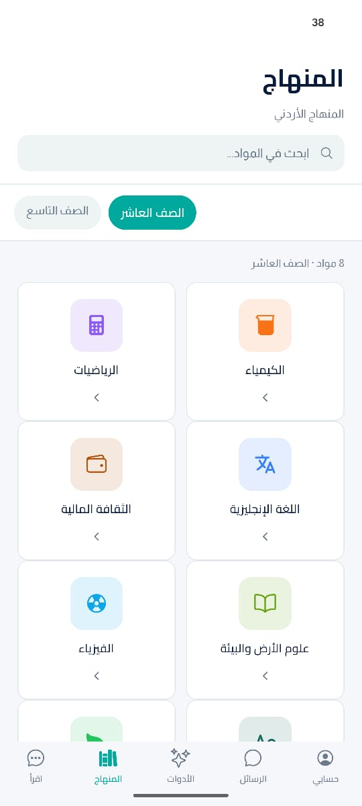
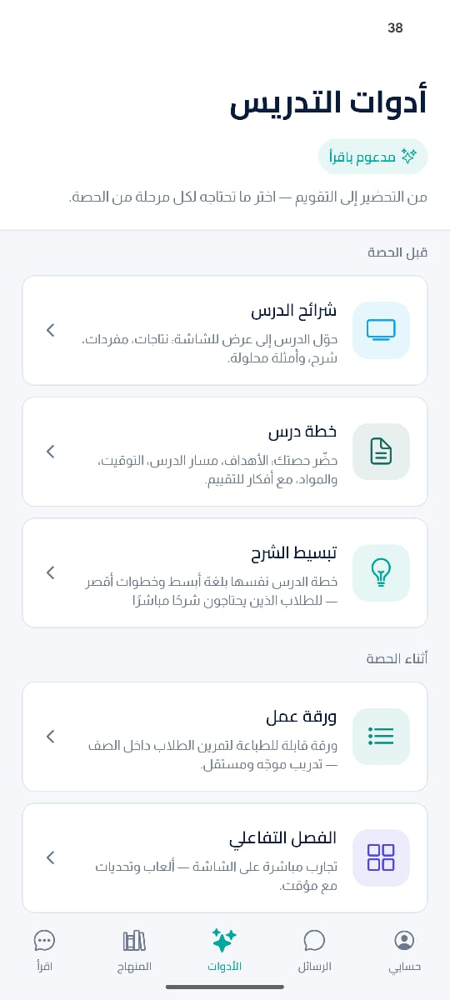
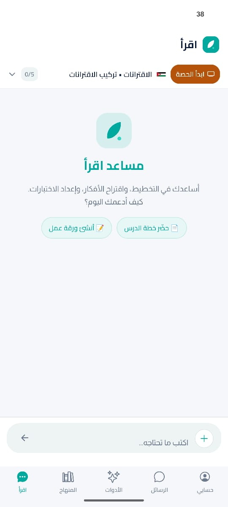
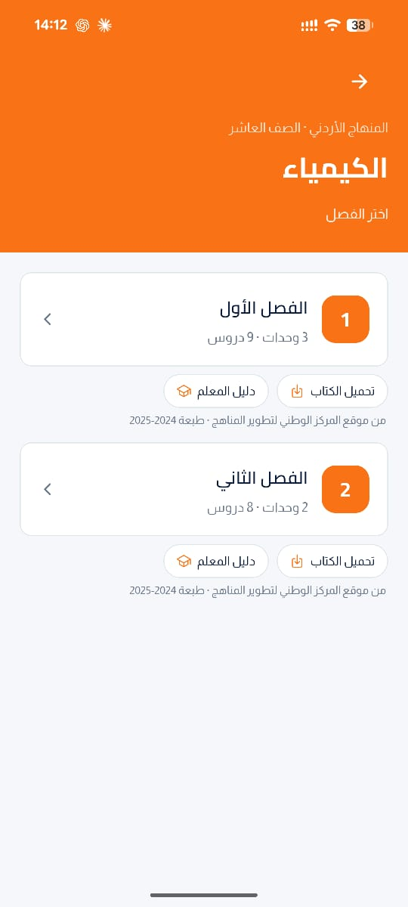

يساعدك اقرأ على إعداد خطة الدرس، وورقة العمل، والاختبار القصير، بناءً على نتاجات التعلّم في المنهاج الأردني—جاهزة للتعديل والطباعة أو العرض خلال دقائق.
يعمل اقرأ مباشرةً من المتصفح على الحاسوب والهاتف والجهاز اللوحي. تطبيق أندرويد متاح الآن، وتطبيق آيفون قيد التطوير.



لأنك لا تحتاج محتوى عامًا؛ بل مواد تعليمية مرتبطة بدرسك وجاهزة للاستخدام في حصّتك.

اختر الصف والمادة والوحدة والدرس، وسيبني اقرأ المحتوى وفق نتاجات التعلّم المعتمدة في المنهاج الأردني.
تُراجع الإجابات الرياضية آليًا قبل عرضها، لتقليل الأخطاء ومنحك محتوى أكثر دقة.
خطة درس، وأنشطة، وتدريبات، وورقة عمل، واختبار قصير، وواجب منزلي، وتذكرة خروج.
واجهة ومحتوى عربيان، مصممان للمعلم والطالب العربي، وليس مجرد ترجمة لمحتوى أجنبي.
من اختيار الدرس إلى مادة جاهزة للتعديل والطباعة.
حدّد الصف، والمادة، والوحدة، ثم اختر الدرس ونتاجات التعلّم المطلوبة.
خطة درس، أو ورقة عمل، أو اختبار قصير، أو واجب منزلي—بحسب احتياج حصّتك.
عدّل المحتوى كما يناسب طلابك، ثم اطبعه أو اعرضه مباشرةً على شاشة الصف.
شرح منصة اقرأ للمعلمين — تحضير الدروس وفق المنهاج الأردني
إجابات واضحة عن أكثر ما يهم المعلمين قبل استخدام اقرأ.
اقرأ مساعد ذكي للمعلمين في الأردن، يساعدهم على تحضير مواد الحصص باللغة العربية ووفق المنهاج الأردني.
نعم. يرتبط المحتوى بالصف والمادة والوحدة والدرس ونتاجات التعلّم الواردة في مناهج المركز الوطني لتطوير المناهج.
يمكنك تحضير خطة درس، وورقة عمل، واختبار قصير، وواجب منزلي، وأنشطة صفية، وشرائح عرض، وتذكرة خروج.
تُراجع الإجابات الرياضية آليًا وتُقارن بمفتاح الإجابة قبل عرضها، لتقليل احتمالية ظهور إجابات غير صحيحة.
تصفّح صفحة المناهج وابحث عن صفّك ومادتك. نضيف مواد وصفوفًا جديدة باستمرار، ويمكنك إخبارنا بما تحتاجه.
يعمل اقرأ من المتصفح على الحاسوب والهاتف والجهاز اللوحي، كما يتوفر تطبيق أندرويد للتحميل المباشر.
يتوفر اقرأ حاليًا بنسخة تجريبية مجانية للمعلمين، ويمكنك استخدامه من المتصفح أو تحميل تطبيق أندرويد دون رسوم.
اقرأ ما زال في مرحلته التجريبية، وملاحظاتك تساعدنا على بناء تجربة أفضل للمعلمين. أخبرنا بالمادة أو الصف الذي تحتاجه، أو شاركنا اقتراحك.
أو راسلنا مباشرة على info@iqrra.com
ابدأ بدرس واحد، واكتشف كم من الوقت يمكن أن يوفره لك اقرأ.